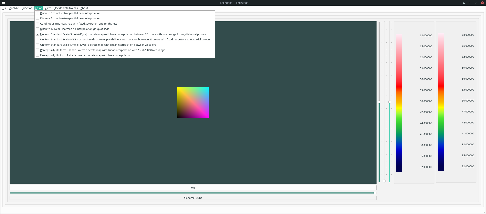
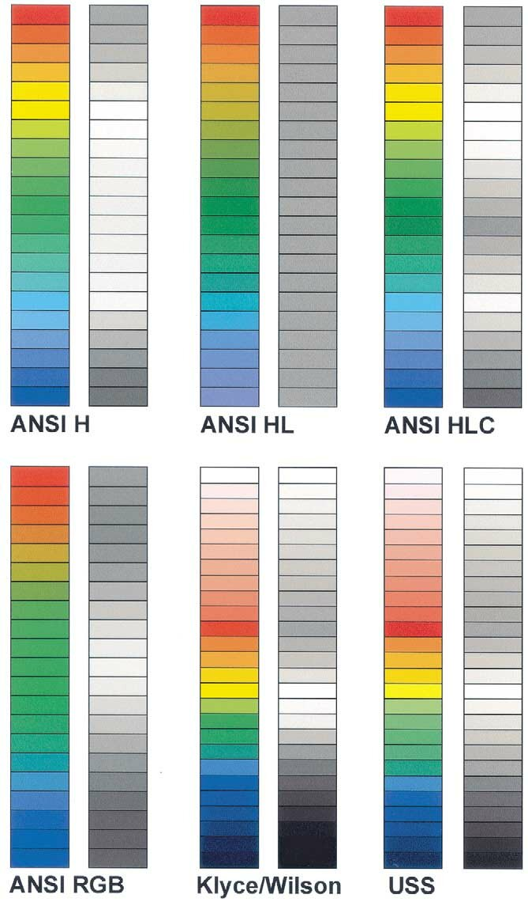

The Color Menu allows for the choice of different color schemes for the plot and legends. As with Function, if Auto Redraw is not set in in the View Menu, you will have to select Redraw in the File Menu.
 |
See also: Open File, Export, Analyze, README, FAQ, File Menu
Here is a comparison between the USS scale and ANSI standards, as discussed in the referenced paper The Universal Standard Scale Proposed Improvements to the American National Standards Institute (ANSI) Scale for Corneal Topography Michael K. Smolek, PhD, Stephen D. Klyce, PhD Jeffery K. Hovis, OD, PhD, Ophthalmology 2002;109:361–369:
